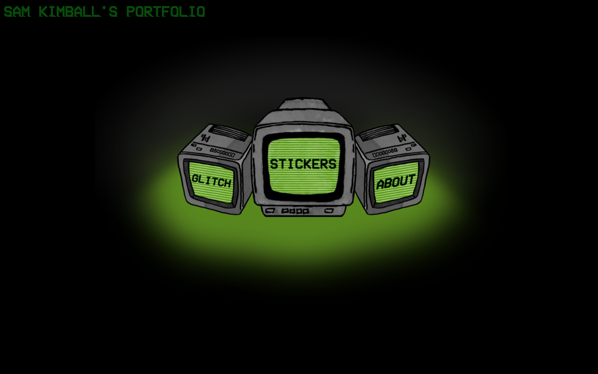
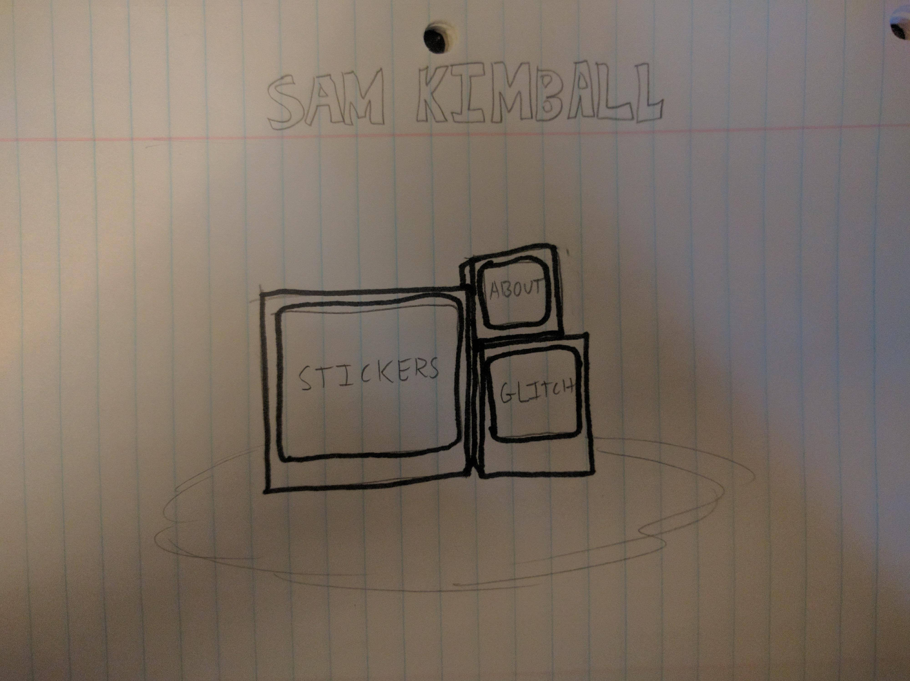
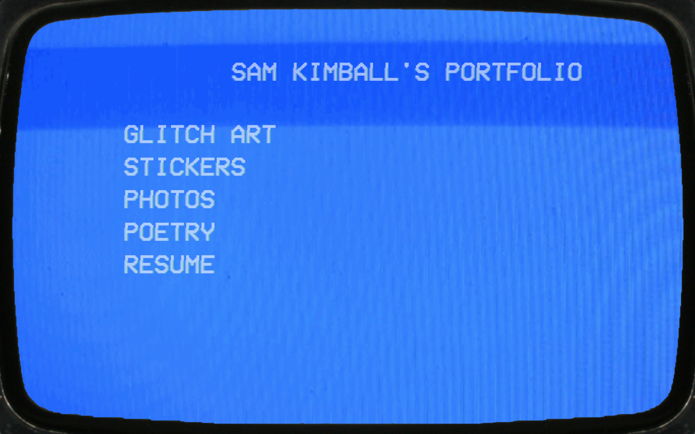
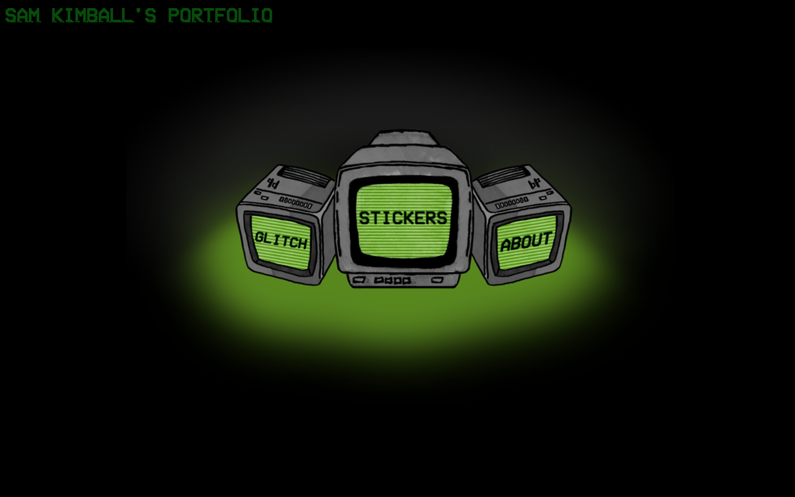
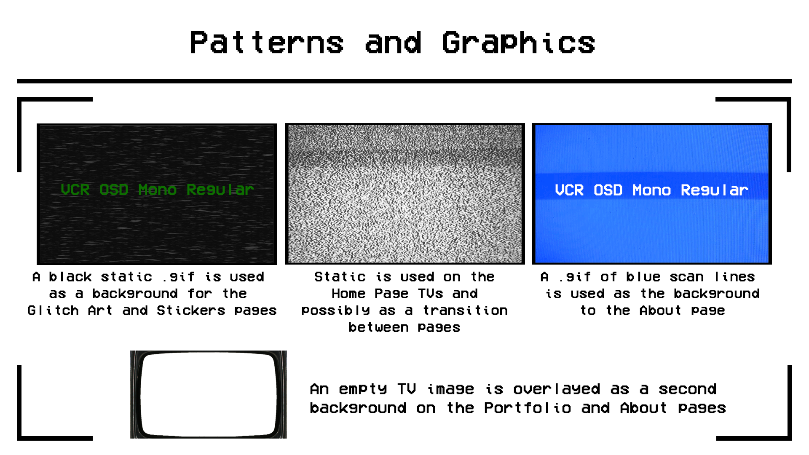

--
 I experimented here with green text on a black .gif background
I experimented here with green text on a black .gif background --  The latest iteration of the home page uses a black and green color scheme
--
As an artist and aspiring web designer, I wanted to create a portfolio website that showcases my all my skills simultaneously. In order to do this, I knew I needed my portfolio website to be more than a simple container for my work; it had to be a piece of art itself. I came up with the idea for my website’s design while working on a project involving glitch art displayed on a CRT television. My aesthetic as an artist draws from old technology, scan lines and TV static. I decided then and there the core concept of my site would be to mimic a CRT display.
I fluctuated between two color schemes in my website’s development. The first was a blue and white color scheme, mimicking the menu system on my own CRT television set. However, as I moved forward I began to experiment with greens and blacks, and eventually shifted to a primarily green-on-black color scheme.

My first draft of the home page used a white on blue color scheme.
--
I experimented here with green text on a black .gif background
--

The latest iteration of the home page uses a black and green color scheme
--
My choice of font for this website was straightforward— I searched for pixelated fonts similar to the ones used on the menus of CRT TVs. I ended up choosing VCR OSD Mono Regular because I felt it best fit my retro theme while still being readable and not cumbersome to look at.
One important design choice I made was adding a visual glitch effect to all text on my website. Using a trick I learned from https://css-tricks.com/glitch-effect-text-images-svg/ I applied a .before and .after animation to all text on my site for aesthetic purposes.
If I was building a large, multipurpose website, I think this design decision would be very questionable. The glitch effect makes it so large quantities of text are hard to read, and loses its novelty the more it shows up (notice how I'm not using it on this page!). As it is, though, my website’s aesthetic is second only in importance to its functionality. I wanted this site to stand out as a piece of art not unlike the contents of my portfolio, so I took this risk and I don’t regret it. The website is small enough and has little enough text that I think this glitch effect really shines.
